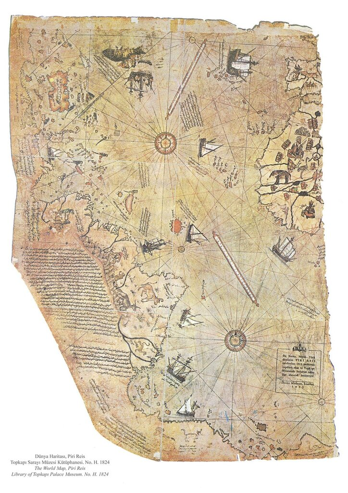

mitiaf усомнился в том, что известная карта турецкого адмирала Пири-реиса содержит результаты третьего путешествия Кристофора Колумба. Попробуем разобраться, как дела обстоят на самом деле.
mitiaf усомнился в том, что известная карта турецкого адмирала Пири-реиса содержит результаты третьего путешествия Кристофора Колумба. Попробуем разобраться, как дела обстоят на самом деле.В 1521 году увидел свет первый картографический труд будущего турецкого адмирала Пири-реиса (Pīrī Ra’īs) «Китаб-и бахрийе» ( Kitāb-i Baḥrīye, Книга навигации). В нем Пири, в частности, пишет, что в 1517 году он представил султану Османской Империи Селиму I свою карту мира, составленную еще в 1513 году.
В течение четырех веков о судьбе карты ничего не было известно. Лишь в 1929 году ее часть была случайно обнаружена в ходе работ над созданием музея в султанском дворце Топкапы. За это открытие мир благодарен сразу нескольким ученым. Немецкий теолог Дайссманн (Gustav Adolf Deissmann), привлеченный турецким министерством образования для составления каталогов немусульманской части сокровищ Топкапы, попросил директора музея Halil Etem Eldem передать ему свитки старых карт из собрания дворца. Одна из этих карт, исполненная на нескольких кусках кожи газели, привлекла внимание немецкого ученого, он показал ее востоковеду Кале (Paul Kahle), который определил, что ее автором является Пири-реис, о чем свидетельствовала надпись в легенде карты:
«Исполнил эту работу в городе Галлиполи раб аллаха Пири бен Хаджи Мухаммед, который известен как племянник [сын брата] Кемаль-реиса, - да ниспошлет аллах свое благословение на них обоих - в месяце Мухаррам 919 года хиджры [март/апрель 1513 года]»

Кале оповестил мир о своем открытии в публикации 1933 года. Находка стала громкой научной сенсацией, споры вокруг нее не утихают по сей день.
Карта Пири-реиса была составлена на основе многих источников. Среди прочих Пири указал, что его работа основана на некой карте Христофора Колумба (Qulūnbū). Об этом можно прочитать в легенде к карте: «Исполнено с … карты, нарисованной Qulūnbū [Колумбом] для западных земель».
Легенда гласит, что Пири-реис получил подлинную карту Колумба, с которой тот отправился в первое плавание и на которую были нанесены все сделанные им в ходе последующих плаваний открытия. Карту эту передал ему дядя Камаль-реис, также находящийся на военно-морской службе у турецкого султана. Камаль же, в свою очередь, получил карту от раба-испанца, который, якобы, сказал своему хозяину: «Я три раза холил с Колон-бо на те земли».
Поль Кале в своей статье приводит отрывок из работы Пири-реиса «Китаб-и бахрийе», в котором описывается захват кораблями Камаль-реиса семи испанских кораблей у побережья Валенсии в 1501 году, т.е. после третьего путешествия Колумба, но еще до четвертого, которое началось в апреле 1502 года. Именно в тот раз, видимо, и захватили в плен испанца, который рассказал о своем участии в походах Колумба.
После обнаружения карты Пири-реиса развернулись активные поиски ее первоисточника – карты Колумба. Вот только один из примеров. Государственный секретарь США Генри Л. Стимсон дал указание послу США в Турции Шериллу организовать поиски карты Колумба, которая, возможно, все еще находится в Турции. Однако несмотря на то, что турецкое правительство приняло активное участие в поисковой операции, результата она не дала.
Географические названия, которые мы находим в западной части карты Пири-реиса очень похожи на названия, данные Колумбом, хотя, конечно, и соответствуют особенностям турецкого языка. Так для Гваделупы мы имеем Wadluk, для Marie Galante (Мари-Галант, первый остров, открытый Колумбом во втором путешествии) - Santa Mardia и Galand, для Santa Cruz – Samo Kresto, для Виргинских островов – Undizi Vergine (здесь мы должны отметить, что Колумб назвал эти острова Santa Úrsula y las Once Mil Vírgines в честь Святой Урсулы и 11 000 девственниц, а undici по-итальянски «одиннадцать»; вспомним, что Колумб был не испанцем, а генуэзцем), Kaleot (Galeot) для Cabo de la Galera (сейчас Galera Point на острове Тринидад; а Тринидад открыт Колумбом в ходе ТРЕТЬЕГО путешествия, так что уже этим вопрос о том, были ли учтены на карте Пири-реиса результаты третьего путешествия Колумба, получает положительный ответ).
Испаньола на карте Пири-реиса простирается с севера на юг; это и понятно, ведь Колумб считал, что это Япония (Cipango). Куба представлена как часть материка, причем Porta Ghande (Puerto Grande) расположена таким же образом, как это описано у Колумба.
Некоторые исследователи считают, что карта Пири-реиса была составлена на основе данных турецкой военной разведки. Известно, что значительную часть турецкой агентуры в Европе составляли мориски. Не исключено, что кто-то из морисков отмечал путь испанских и португальских кораблей в их первых походах через Атлантику, находясь среди членов их экипажей. Не важно, была ли у Пири-реиса подлинная карта Колумба, или он нанес на свою карту данные, переданные Турции ее агентами,- важно, что данные походов Колумба (включая третий) были на карту Пири-реиса нанесены.
Мы еще вернемся к карте Пири-реиса, когда будем говорить об изображенных на ней кораблях.